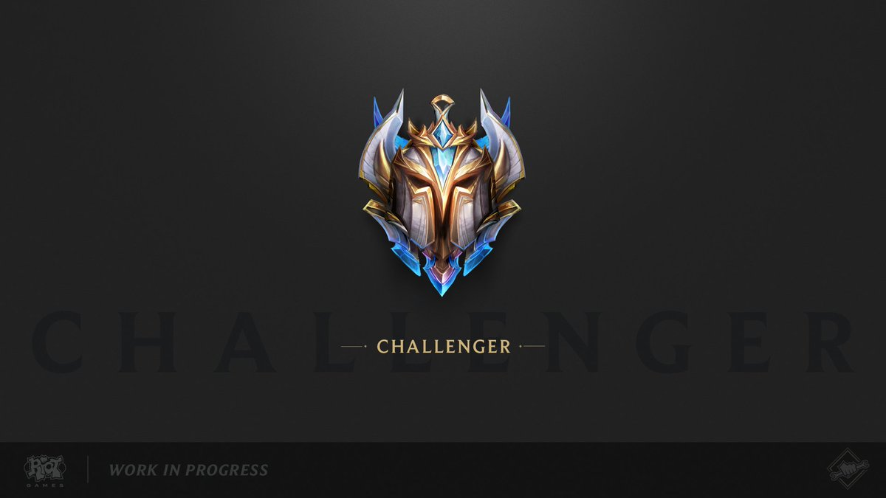

Spegel
Om Spotify
Spotify Technology S.A är ett svensk multinationelt företag, spotify var publicerad 7 oktober 2008. Med bra kvalitet ljudkvalitet, över miljontals låtar, möjlghet att kunna lyssna till strömmad musik och gratis att ladda ne gjorde så att spotify blev världens största online musiktjänst med över 60 milijoner användare. Jag använder denna mjukvaran för att den är framför allt gratis och finns alla möljiga låter som du vill lyssna på. Det finns även andra liknande tjänster som Itunes, och youtube musik. Men skillnaden är att itunes kostar för att man ska kunna lyssna på musik och youtube har inte direkt musik listor som top 50 musik global. Spotify uppdaterar alltid de mest populära musik och lägger ut det på en lista.
Spotify har som sagt påverkat oss globalt, man kan lyssna på musik även utan internet, på flyg eller under vatten. Den används i hela nordamerika, de flesta länder i sydamerika, europa, och en del länder i asien och autralia. Om spotify skulle försvinna imorgon, det skulle påverka många som lyssnar på musik när man springer, ute och jogga, eller någon som jobbar och lyssnar på musik så att man kan fokusera bättre, det skulle påverka deras träning eller kvalite på deras arbete. Samhället och människor kommer också förlorar mycket pengar på spotifys reklam och premium avgifter. Då kanske någon annan konkurrent mjukvara kommer ta över men det kommer ta tid innan den mjukvaran kommer bli lika populär som spotify är nu. Själv lyssnar jag på musik ibland när jag åker till skolan, när jag försöker arbeta något som man ska fokusera på t.ex. skriva en essay. Och när jag spela spel så det bli bättre miljö att spela i. Det skulle påverka mig en del, jag kommer ha tråkig om jag inte lyssnar på musik på väg till skolan, och göra sämre arbeta p.ga. sämre fokus.
